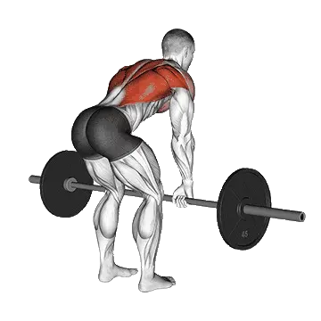

Vorgebeugtes Rudern
Für Vorgebeugtes Rudern kannst du Durchschnittsgewicht und Kraftstandards als Referenz für den Bereich Rücken vergleichen. Die Zielmuskulatur ist Latissimus, Trapezmuskel.

Durchschnittsgewicht: Mittelstufe
Richtwert für eine Person auf mittlerem Niveau.
Männer
188 lb
Frauen
91 lb
Vorgebeugtes Rudern: Durchschnittsgewicht [1RM]
| Level | ||
|---|---|---|
| Einsteiger | 89 lb | 34 lb |
| Anfänger | 133 lb | 58 lb |
| Fortgeschrittene | 188 lb | 91 lb |
| Erfahrene | 253 lb | 130 lb |
| Elite | 323 lb | 175 lb |
Hinweis: Diese Standards sind 1RM-Schätzwerte auf Basis durchschnittlicher Kraftsportlerinnen und Kraftsportler. Körpergewicht, Alter und andere persönliche Faktoren können die Werte beeinflussen. Die detaillierten Daten stehen in der Tabelle unten.
Vorgebeugtes Rudern: Kraftstandards(lb)
Männer nach Körpergewicht (lb) [1RM]
| Körpergewicht | Einsteiger | Anfänger | Fortgeschrittene | Erfahrene | Elite |
|---|---|---|---|---|---|
| 110 | 46 | 74 | 111 | 156 | 206 |
| 120 | 54 | 85 | 124 | 171 | 223 |
| 130 | 62 | 95 | 137 | 186 | 240 |
| 140 | 70 | 105 | 148 | 200 | 255 |
| 150 | 78 | 115 | 160 | 213 | 271 |
| 160 | 86 | 124 | 171 | 226 | 285 |
| 170 | 94 | 134 | 182 | 238 | 299 |
| 180 | 102 | 143 | 193 | 251 | 313 |
| 190 | 109 | 152 | 203 | 262 | 326 |
| 200 | 117 | 160 | 213 | 274 | 338 |
| 210 | 124 | 169 | 223 | 285 | 351 |
| 220 | 131 | 177 | 232 | 295 | 362 |
| 230 | 138 | 185 | 242 | 306 | 374 |
| 240 | 145 | 193 | 251 | 316 | 385 |
| 250 | 152 | 201 | 259 | 326 | 396 |
| 260 | 158 | 208 | 268 | 335 | 407 |
| 270 | 165 | 216 | 276 | 345 | 417 |
| 280 | 171 | 223 | 285 | 354 | 427 |
| 290 | 177 | 230 | 293 | 363 | 437 |
| 300 | 183 | 237 | 301 | 372 | 447 |
| 310 | 189 | 244 | 308 | 380 | 456 |
Männer nach Alter [1RM]
| Alter | Einsteiger | Anfänger | Fortgeschrittene | Erfahrene | Elite |
|---|---|---|---|---|---|
| 15 | 76 | 113 | 160 | 215 | 275 |
| 20 | 87 | 130 | 183 | 246 | 315 |
| 25 | 89 | 133 | 188 | 253 | 323 |
| 30 | 89 | 133 | 188 | 253 | 323 |
| 35 | 89 | 133 | 188 | 253 | 323 |
| 40 | 89 | 133 | 188 | 253 | 323 |
| 45 | 85 | 126 | 179 | 240 | 307 |
| 50 | 80 | 119 | 168 | 225 | 288 |
| 55 | 74 | 110 | 155 | 208 | 266 |
| 60 | 67 | 100 | 141 | 190 | 243 |
| 65 | 61 | 90 | 128 | 172 | 220 |
| 70 | 54 | 81 | 115 | 154 | 197 |
| 75 | 49 | 73 | 103 | 138 | 176 |
| 80 | 44 | 65 | 92 | 123 | 158 |
| 85 | 39 | 58 | 82 | 110 | 141 |
| 90 | 35 | 52 | 74 | 100 | 127 |
Frauen nach Körpergewicht (lb) [1RM]
| Körpergewicht | Einsteiger | Anfänger | Fortgeschrittene | Erfahrene | Elite |
|---|---|---|---|---|---|
| 90 | 23 | 42 | 70 | 104 | 143 |
| 100 | 25 | 46 | 74 | 109 | 149 |
| 110 | 28 | 49 | 79 | 115 | 155 |
| 120 | 30 | 52 | 82 | 119 | 161 |
| 130 | 32 | 55 | 86 | 124 | 166 |
| 140 | 34 | 58 | 90 | 128 | 171 |
| 150 | 36 | 61 | 93 | 132 | 175 |
| 160 | 38 | 63 | 96 | 136 | 180 |
| 170 | 40 | 66 | 99 | 139 | 184 |
| 180 | 42 | 68 | 102 | 143 | 188 |
| 190 | 44 | 70 | 105 | 146 | 192 |
| 200 | 46 | 73 | 108 | 149 | 195 |
| 210 | 47 | 75 | 110 | 152 | 199 |
| 220 | 49 | 77 | 113 | 155 | 202 |
| 230 | 51 | 79 | 115 | 158 | 205 |
| 240 | 52 | 81 | 117 | 161 | 208 |
| 250 | 54 | 83 | 120 | 163 | 211 |
| 260 | 55 | 84 | 122 | 166 | 214 |
Frauen nach Alter [1RM]
| Alter | Einsteiger | Anfänger | Fortgeschrittene | Erfahrene | Elite |
|---|---|---|---|---|---|
| 15 | 29 | 50 | 77 | 111 | 149 |
| 20 | 33 | 57 | 88 | 127 | 170 |
| 25 | 34 | 58 | 91 | 130 | 175 |
| 30 | 34 | 58 | 91 | 130 | 175 |
| 35 | 34 | 58 | 91 | 130 | 175 |
| 40 | 34 | 58 | 91 | 130 | 175 |
| 45 | 32 | 55 | 86 | 124 | 166 |
| 50 | 30 | 52 | 81 | 116 | 155 |
| 55 | 28 | 48 | 75 | 107 | 144 |
| 60 | 25 | 44 | 68 | 98 | 131 |
| 65 | 23 | 40 | 62 | 88 | 119 |
| 70 | 21 | 35 | 55 | 79 | 106 |
| 75 | 18 | 32 | 49 | 71 | 95 |
| 80 | 17 | 28 | 44 | 63 | 85 |
| 85 | 15 | 25 | 40 | 57 | 76 |
| 90 | 13 | 23 | 36 | 51 | 69 |
Hinweis: Eine Standard-Langhantel im Fitnessstudio wiegt meist 44 lb.
Tracking und Analyse in der Shiba App
Gewichte, Wiederholungen und Fortschritt an einem Ort.
Weltrekord
Aktualisiert: July 2, 2026
Tabellenhinweise
| Level | Beschreibung | Verteilung |
|---|---|---|
| Einsteiger | Beherrscht die saubere Technik und trainiert seit mindestens 1 Monat regelmäßig. | Untere 5% |
| Anfänger | Trainiert seit mindestens 6 Monaten regelmäßig. | Top 80% |
| Fortgeschrittene | Trainiert seit mindestens 2 Jahren regelmäßig. | Top 50% |
| Erfahrene | Trainiert seit mehr als 5 Jahren regelmäßig. | Top 20% |
| Elite | Trainiert diese Übung seit mehr als 5 Jahren gezielt. | Top 5% |
Weitere Übungen
Rücken
Latzug
Rücken
Klimmzüge im Untergriff
Rücken / Körpergewicht
Kurzhantelrudern
Rücken / Kurzhantel
Sitzendes Kabelrudern
Rücken / Kabelzug
Langhantel Shrug
Rücken / Langhantel
T-Bar Rudern
Rücken
Kurzhantel-Shrug
Rücken / Kurzhantel
Pendlay Row
Rücken
Rudern an der Maschine
Rücken / Maschine
Kurzhantel-Pullover
Rücken / Kurzhantel
Kurzhantel-Reverse Fly
Rücken / Kurzhantel
Brustgestütztes Kurzhantelrudern
Rücken / Kurzhantel